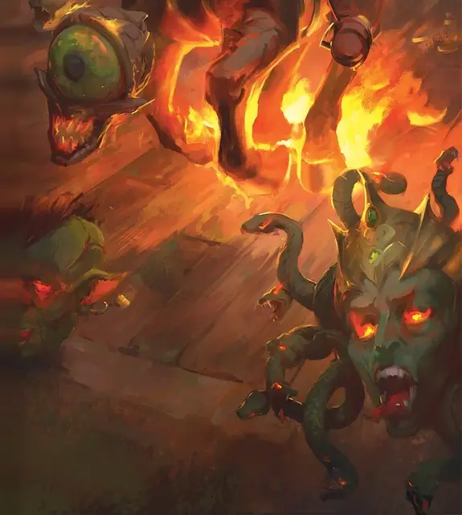

Мёртвая голова
Death's Head
Крошечная Нежить

Класс Доспеха 16 (природный доспех)
Хиты 17 (5к4 + 5)
Скорость 0 футов, летая 30 футов (парит)
| мод | спас | ||
|---|---|---|---|
| СИЛ | 8 | −1 | −1 |
| ЛОВ | 13 | +1 | +1 |
| ТЕЛ | 12 | +1 | +1 |
| мод | спас | ||
|---|---|---|---|
| ИНТ | 5 | −3 | −3 |
| МДР | 14 | +2 | +2 |
| ХАР | 3 | −4 | −4 |
Сопротивление урону некротическая энергия
Чувства пассивное Восприятие 12
Опасность 1/2 (100 опыта)
Бонус мастерства +2
Особенности
Обезглавленная форма. При создании мёртвая голова принимает одну из трёх форм: Абберантную голову, Скрежещущую голову или Окаменяющую голову. Эта форма определяет атаку существа.
Необычная природа. Мёртвая голова не нуждается в воздухе, пище, питье или сне.
Действия
Скрежещущий укус (только Скрежещущая голова). Рукопашная атака оружием: +3 к попаданию, досягаемость 5 фт., одна цель. Попадание: 4 (1к6 + 1) колющего урона и 7 (2к6) урона некротической энергией.
Умопомрачающий укус (только Аберрантная голова). Рукопашная атака оружием: +3 к попаданию, досягаемость 5 фт., одна цель. Попадание: 4 (1к6 + 1) колющего урона и 5 (1к10) урона некротической энергией, а также цель должна преуспеть в спасброске Интеллекта Сл 10, иначе она не может совершать реакции до конца своего следующего хода. Более того, на своем следующем ходу цель должна выбрать, будет она перемещаться, использовать действие или бонусное действие; она может выбрать только одно из трёх.
Окаменяющий укус (только Окаменяющая голова). Рукопашная атака оружием: +3 к попаданию, досягаемость 5 фт., одна цель. Попадание: 3 (1к4 + 1) колющего урона, а также цель должна преуспеть в спасброске Телосложения Сл 10, иначе станет опутанной, поскольку начнёт превращаться в камень. Цель должна повторить спасбросок в конце следующего хода. При успехе эффект заканчивается. При неудаче цель окаменевает на 10 минут.
Описание
Мёртвая голова — это бестелесная летающая голова. Тип существа, из которого возникла эта гротескная нежить, определяет, как она воздействует на жертв. Мёртвая голова, которая при жизни принадлежала человеку или животному, пикирует вниз, чтобы разорвать жертву на части своими скрежещущими зубами. Если же это была голова монстра, например нотика [nothic] или медузы [medusa], то часть силы, которой она обладала при жизни, остается, и голова может одурманивать умы или превращать тела своих жертв в камень.
Дерево с мёртвыми головами
В проклятых чащах растут пробужденные деревья [awakened tree], с которых как грязные плоды свисают 2к6 мёртвые головы [death's head]. Головы отделяются, чтобы защитить дерево, если ему угрожает опасность. Если дерево будет уничтожено, головы рассыпаются по земле и засаживаются в нечестивую землю. Новое дерево с мёртвыми головами появляется из каждой посаженной головы 1к12 месяцев спустя.